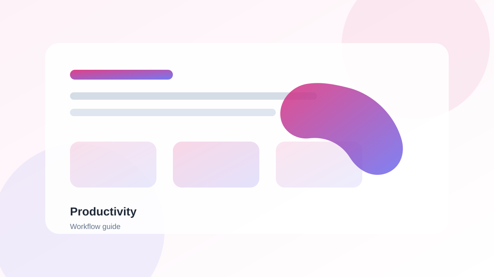
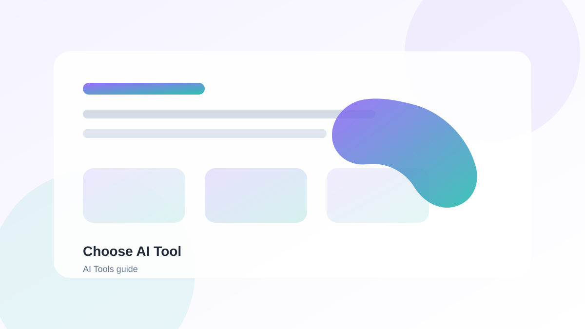
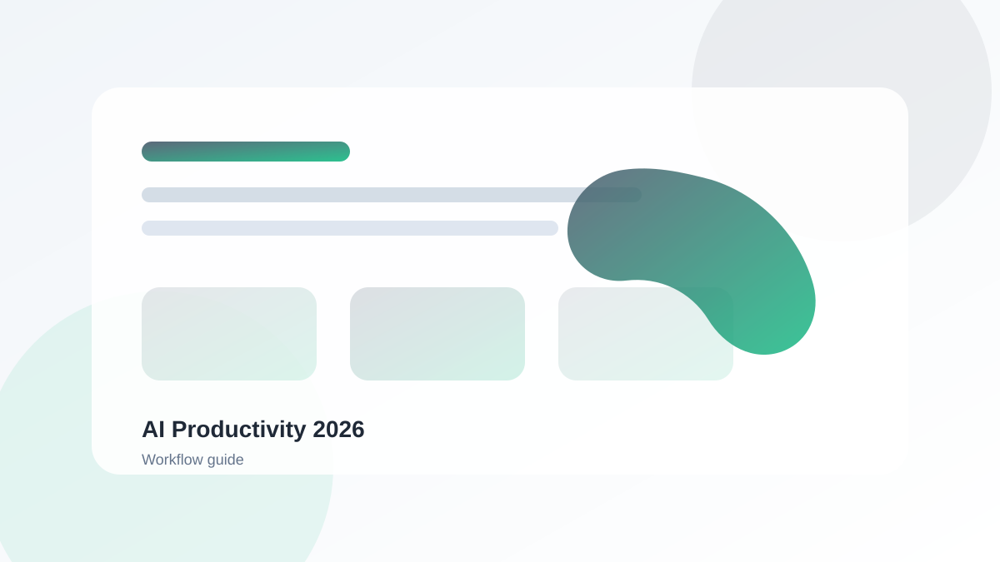

AI Productivity Tools
Boost your efficiency with AI-powered workflow tools.
Explore ->Discover the best AI tools for every use case - writing, productivity, design, video, and more. Whether you're a student, professional, or business owner, find the perfect AI assistant to boost your efficiency.
This comprehensive AI tools directory is designed for anyone looking to leverage artificial intelligence to enhance their productivity, creativity, and workflow. Whether you're just starting your AI journey or you're an experienced user, this page will help you discover the right tools for your needs.
With so many AI tools available, selecting the right one can be overwhelming. Here are key factors to consider when making your decision:
Explore our curated list of AI tools across different categories. We've handpicked these tools based on their features, usability, and user reviews.
Powerful AI chatbot for writing, coding, and general knowledge. Perfect for content creation, brainstorming, and technical assistance.
AI writing assistant optimized for marketing and sales content. Ideal for bloggers, marketers, and businesses.
AI image generation for creative projects and designs. Create stunning visuals from text prompts.
AI-powered note-taking and workspace organization. All-in-one solution for personal and team productivity.
AI video editing and generation tools for creators. Transform your video workflow.
AI-powered writing assistant for grammar, style, and tone. Improve your writing instantly.
AI-powered audio and video editing with transcription. Edit audio like text.
AI image generation from text descriptions. Create anything you can imagine.
AI tools can help with a wide range of tasks. Here are some popular use cases to inspire your workflow:
For beginners, we recommend starting with tools that have intuitive interfaces and free tiers. ChatGPT, Notion AI, and GrammarlyGO are excellent choices due to their user-friendly design and comprehensive documentation. These tools provide gentle learning curves while offering powerful capabilities.
It depends on the tool. Always check the privacy policy and data handling practices before using any AI tool with sensitive information. Many enterprise-grade tools offer encryption, access controls, and data protection commitments. For highly sensitive data, consider self-hosted solutions or tools that offer data residency options.
AI tool pricing varies widely. Many tools offer free tiers with limited features, while premium plans can range from $10-$100+ per month depending on the features and usage limits. Some enterprise solutions can be more expensive but offer advanced security features and dedicated support.
AI tools are best viewed as productivity enhancers rather than replacements. They excel at automating repetitive tasks, allowing humans to focus on creative and strategic work. The most effective workflows combine human creativity with AI efficiency.
Start by identifying your biggest productivity pain point. Then, explore tools that address that specific need. Most tools offer free trials, so you can test them before committing. Start small, learn the basics, and gradually integrate more advanced features into your workflow.
Explore our specialized categories to find tools tailored to your specific needs:



A comprehensive guide to selecting the perfect AI tool for your specific needs.
Read Guide ->
Start your AI journey with these powerful free tools perfect for beginners.
Read Guide ->
Discover the top AI tools that will transform your workflow this year.
Read Guide ->